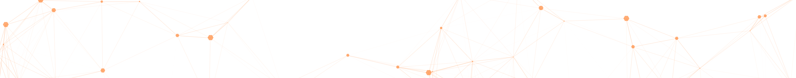
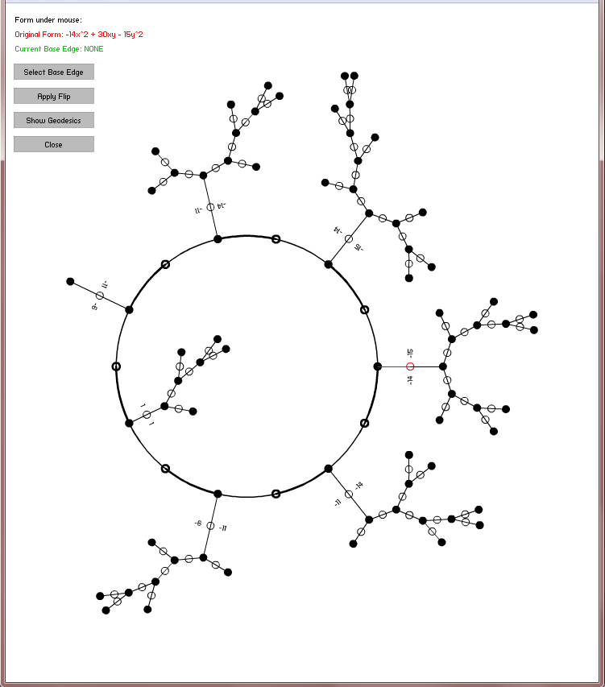
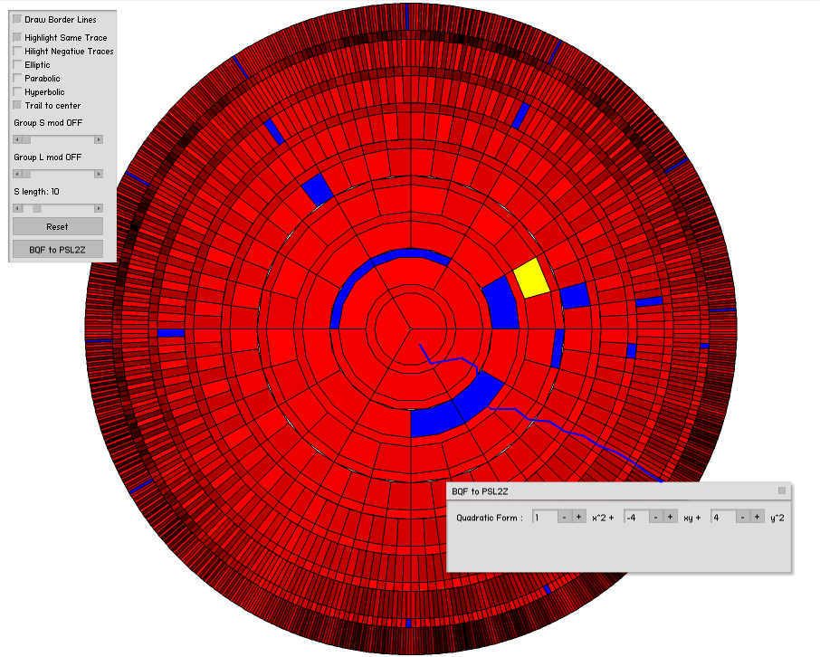

Galatasaray Üniversitesi · Matematik Bölümü
FR
TR
EN
Anasayfa
Üyeler
Araştırma
Eğitim
Üniversite
Yüksek Lisans
Mezunlarımız
Matematik Kulübü
Veri Bilimi Seminerleri
Dahili Bilgiler
Profesyonel Eğitim Hizmetleri
Projeler
Bölümde GSUBAP ve TUBITAK projeleri yürütülmektedir.
Bölümümüz öğretim üyelerinden Serap Gürer'in projeleri:
TÜBİTAK-115F410 Difeolojik Uzaylar Üzerinde Genelleştirilmiş (Ko)Homolojik Kuramlar
GSU-BAP-15.504.001 Topolojik Uzayları Sınıflandırma Problemleri
Bölümümüz öğretim üyelerinden Oğuzhan Kaya'nın projeleri:
TÜBİTAK-116F130 Cebirsel varyeteler ile ilgili periyot integralleri (2017-2020)
GSU-BAP-16.504.002 Simetrik uzaylar için BKS dönüşümü ile Segal-Bargmann dönüşümünün karşılaştırılması 2016–-2019
Bölümümüz öğretim üyelerinden Susumu Tanabe'nin projeleri:
TÜBİTAK-116F130 Cebirsel varyeteler ile ilgili periyot integralleri (2017-2020)
Bölümümüz öğretim üyelerinden Meral Tosun'un projeleri:
TÜBİTAK-1001 "Rational Singularities of Surfaces, Lie algebras and quiver" 2010-2013.
TÜBİTAK-CNRS Cooperation Grant, "Topology of singularities of complex surfaces", 2013-2015.
TÜBITAK-1001 "Equations defining rational singularities and their invariants" 2014-2017
UNAM-Mexico (researcher) grant, "Singularidades locales de superficies complejas", 2011-2014.
GSU-BAP, "Geometry of elliptic surface singularities obtained by Lie algebra", 2007-2009.
GSU-BAP, "Surface singularities and Newton polygon", 2011-2013.
GSU-BAP, "Ultrametric Spaces appearing in Singularity Theory", 2016-2018.
Bölümümüz öğretim üyelerinden A. Muhammed Uludağ'ın projeleri:
TÜBİTAK-104T136 Karmaşık Hiperbolik Geometri (2005-2010)
TÜBİTAK 110T690 GALACT Hipergeometrik Galois Etkileri (2011-2015)
TÜBİTAK 115F412 CONTFRAC Sürekli Kesir Tasvirleri (2016- )
GSU-BAP: Konümeratör (2018-2019)
GSU-BAP: Tasvir sınıfı groupoidi ve Thompson grubu için ortak bir çerçeve (2017-2018)
GSU-BAP: Farey Ağacının Sınırında Ölçüler (2016-2017)
GSU-BAP Ruelle zeta and other zeta functions associated to a family of dynamical continued fraction maps 2015-2017
GSU-BAP Subgroups of the general linear group over the rationals 2014–-2015
GSU-BAP A visual study of the modular group 2012-–2014
GSU-BAP Modular Group, Ribbons and Solenoids 2009-2010
GSU-BAP Galois actions on some arithmetic stacks 2007-2009
GSU-BAP Orbifolds covered by Calabi-Yau manifold 2006-–2007
Bölümümüz öğretim üyelerinden Ayşegül Yıldız Ulus'un projeleri:
TÜBİTAK-2219 Sonsuz ufuklu kesikli zamanlı optimal büyüme problemi ( 2016-2017)
GSU-BAP: Analiz Eğitiminde Yenilik Hareketi:Geleneksel Eğitimden Teknoloji Destek\Yardımlı Eğitime (2007-2010)
GSU-BAP: Tüketim Alışkanlıklarının Oluşumu ve Optimal Büyüme Problemi (2019-)
Bölümümüz öğretim üyelerinden Ayberk Zeytin'in projeleri:
TÜBİTAK-113R017 Moduler Grubun Infografigi, Sinif Sayisi Problemleri ve Carklar (2013-2016)
TÜBİTAK-114R073 Genel Carklar ve İkili Kuadratik Formlar (2015-2018)
GSU-BAP-13.504.001 Sınıf Sayısı Problemleri ve Lang Sanıları 2013–-2016
GSU-BAP-16.504.004 Kuadratik Formlarin Aritmetigi 2016–-2018
Bölümümüz öğretim üyelerinden Ayberk Zeytin'in geliştirmiş olduğu (A. Muhammed Uludağ ve Hakan Ayral ile birlikte) uygulamanın bağlantısı:
Uygulama
(Android market üzerinde)


©
GSÜ Math. Tüm hakları saklıdır.
{kind=link}
{kind=link}